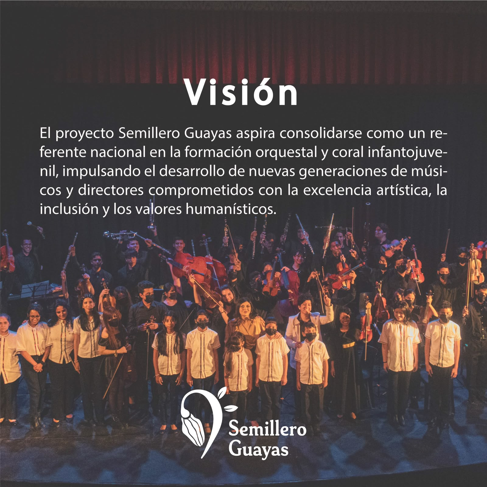
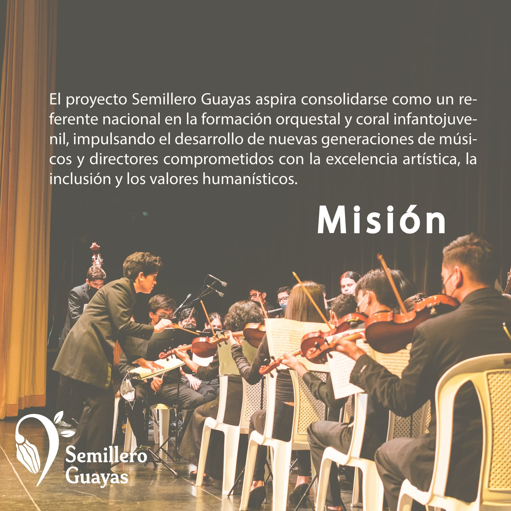
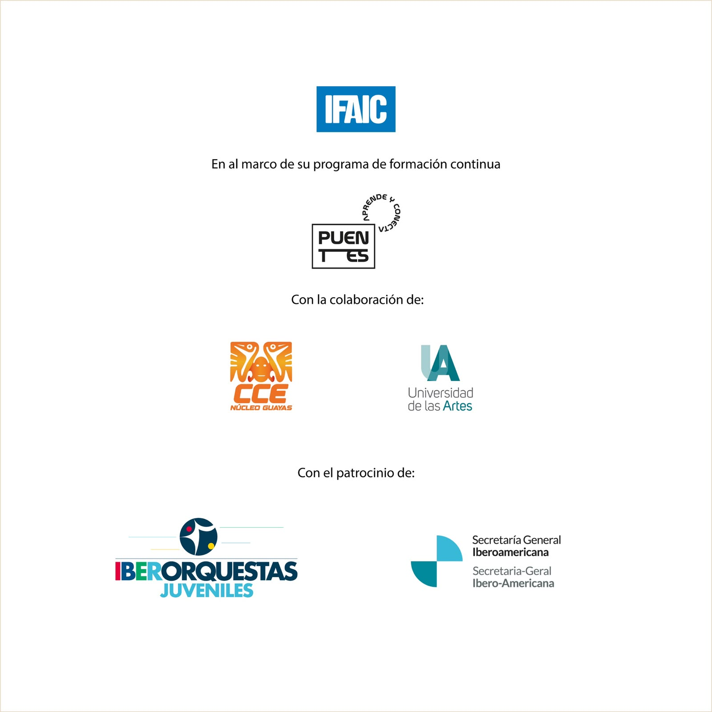

Formación musical orquestal y coral para niñas, niños, jóvenes y estudiantes de música del Ecuador.
Conoce el proyectoSemillero Guayas es un proyecto de formación musical orientado al fortalecimiento de la práctica orquestal y coral de niñas, niños, jóvenes y estudiantes de música del Ecuador. A través de un modelo pedagógico de excelencia, promueve el desarrollo artístico, la inclusión, el trabajo colaborativo y la formación en valores, utilizando la música como herramienta de transformación social.

Consolidarse como referente nacional en la formación orquestal y coral infantojuvenil, impulsando nuevas generaciones de músicos y directores comprometidos con la excelencia, la inclusión y los valores humanísticos.

Impulsar la formación musical de excelencia de niñas, niños y jóvenes del Guayas, fortaleciendo su desarrollo artístico, humano y social a través de la práctica orquestal y coral.
Formación instrumental y práctica de conjunto.
Canto coral y técnica vocal para jóvenes.
Formación de nuevas generaciones de directores.
La música como transformación social.
Excelencia con metodología nacional.
Vinculación regional de formación.
Respaldo de instituciones iberoamericanas y ecuatorianas comprometidas con la educación y la cultura.

¿Quieres sumarte al Semillero Guayas? Escríbenos.
Mantente conectado con Semillero Guayas en nuestras plataformas.